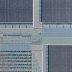

VLIW: Very Long Instruction WordDifficulties of Implementation |
||||
|

VLIW has been slow to gain market acceptance due in large part to the human programming difficulties involved. VLIW's advantages come largely from having an intelligent compiler that can schedule many instructions simultaneously (in a large word). This is not an easy process. Early VLIW implementations looked only into basic program blocks to obtain ILP, and could not follow complex branches. As such, little optimization was possible. Authoring a compiler to effectively predict code paths is easily the largest hurdle of VLIW design. It is also one of the biggest potential advantages of VLIW--as die sizes become smaller and interconnect delays become more debilitating to chip performance, more of on-chip processing will need to happen at the software level. Another big problem is that any VLIW-compatible code is largely proprietary to the hardware of the chip it is designed for. Code written for a processor using five execution units will be incompatible with one using seven. The inflexibility inherent in microchip design makes this a problem. Modern CISC chips still need to be compatible with x86 standards from the 1980s. Transmeta has addressed this problem with the development of its Code Morphing technology that allows x86 code to be run on its Crusoe chips, but this problem remains a major stumbling block for corporate VLIW implementations. VLIW also has some problems with the inflexibility of its compiler-first design. Since instructions are ordered at compile time, any unanticipated memory conflicts that occur (e.g., latency, cache misses) can not be accounted for without deviation from a pure VLIW design; that is, adding superscalar elements to the processor.
|
|
Navigation
|
||
| ||||